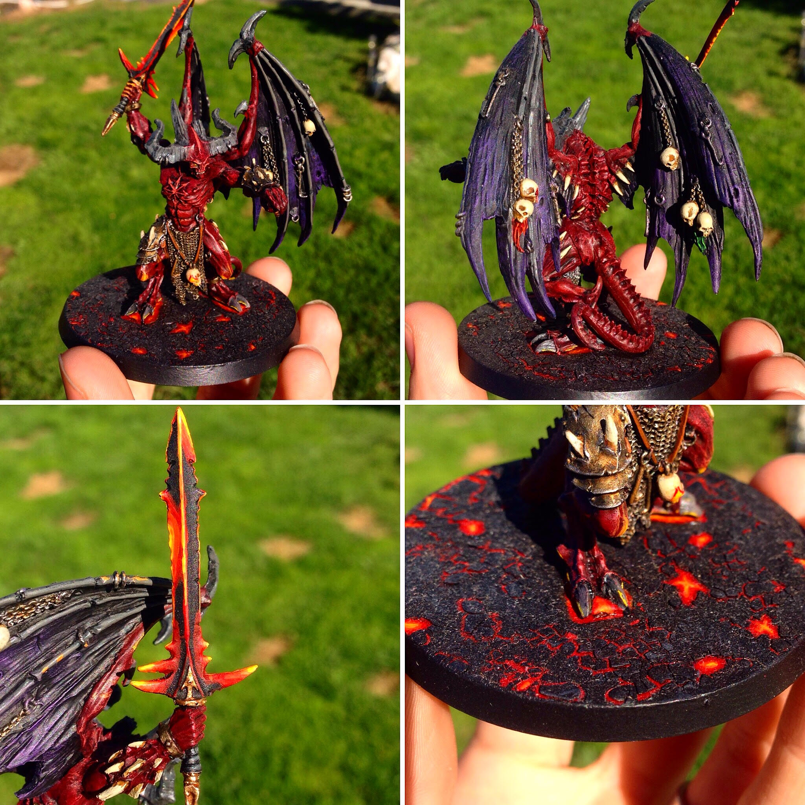

Where I Came From

This Demon Lord is a miniature called "Demon Prine Be'Lakor" and it is another sculpt from Citadel's Games Workshop for their Warhammer fantasy miniatures line. This was painted over the course of a week, employing lots of drybrush technique and a crackle medium for the base with the interior lava cracks painted after the cracks set. This is the final work in my three work series "Where I Came From." Like the others this one is also intended to be used as a game piece for a game of my own design. This piece was created in June 2017.>